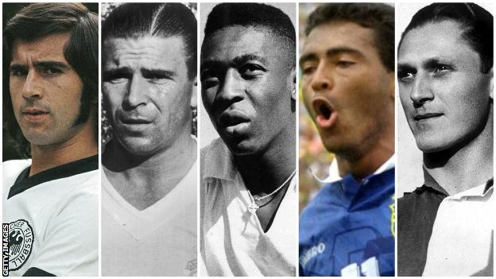

Lionel Messi scored the 700th goal of his career with a Panenka penalty in Barcelona's La Liga draw with Atletico Madrid on Tuesday.

The Spanish giants' all-time top scorer hit the landmark goal for club and country by gently chipping the ball into the net as Jan Oblak dived the wrong way.
The goal had put Barcelona 2-1 up but Atletico hit back to draw 2-2.
Barca remain second, one point behind Real Madrid, who have a game in hand.
Messi's penalty was also his 630th goal in his 724th appearance for the club.
The Argentina star played a part in the opener for Barcelona when his whipped corner hit Diego Costa and deflected into the back of the net.
Former Chelsea striker Costa quickly had the chance to make amends when Atletico were awarded a penalty after Yannick Carrasco was fouled inside the box.
Costa stepped up to take the spot kick only to see it saved by Marc-Andre ter Stegen, but it had to be retaken because the Barcelona goalkeeper had come off his line early. Saul Niguez took the second penalty and sent Ter Stegen the wrong way.
Messi restored Barcelona's lead and reached his career milestone with his cheeky Panenka - named after Antonin Panenka's famous penalty for Czechoslovakia in the final of the 1976 European Championship - but Niguez equalised again with another penalty as Barca dropped points which could cost them dear in the title race.
Messi joins 700 club
Another year, another milestone for Messi.
His 700th career goal - coming just over 14 months after netting for the 600th time for Barcelona - means he joins a select group.
According to data from Rec.Sport.Soccer Statistics Foundation, Messi is now one of seven players to have reached the 700-goal mark in their career.
Czech-Austrian Josef Bican leads the way with 805 career goals, followed by Brazil legend Romario, who bagged 772, with his compatriot Pele third on 767.
Hungary legend Ferenc Puskas hit 746 goals, while former Germany striker Gerd Muller rounds out the top five with 735 goals.

Main Page